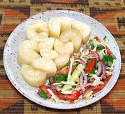

|
Cassava with Kachumbari SaladEast Africa, Tanzania - Muhogo wa Kuchemsha na Kachumbari | ||||
| Makes: Effort: Sched: DoAhead: |
2-3/4 # ** 1-3/4 hrs Yes |
Here is a simple, inexpensive appetizer plate, side dish, or breakfast, popular in the coastal regions of Tanzania. | |||
|
1 1 ------- ar |
# t --- |
Cassava (1) Salt -- Serve With Kachumbari Salad |
Do Ahead - (1 hr + chilling)
|